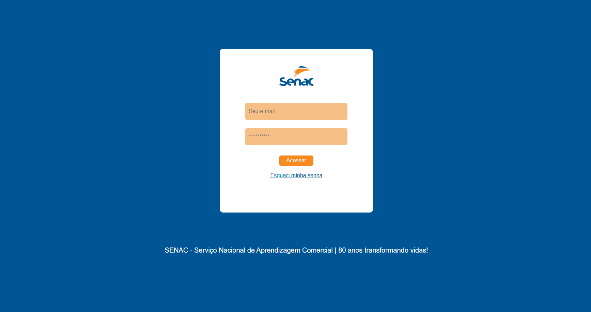
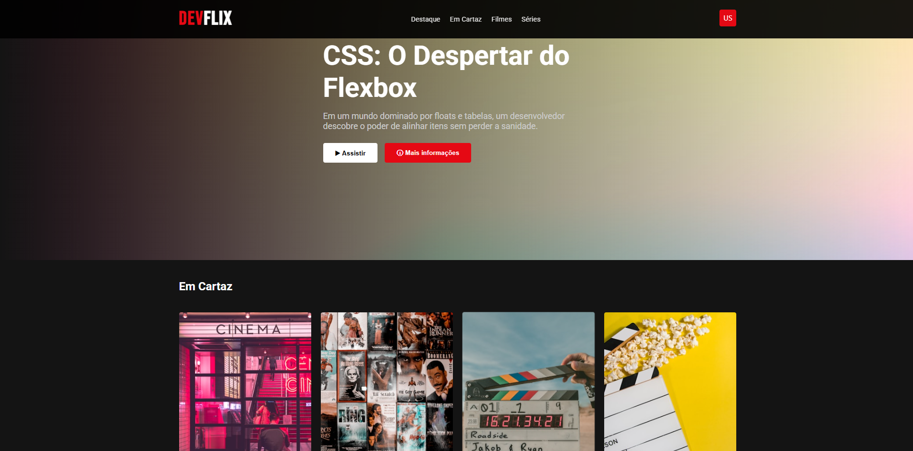
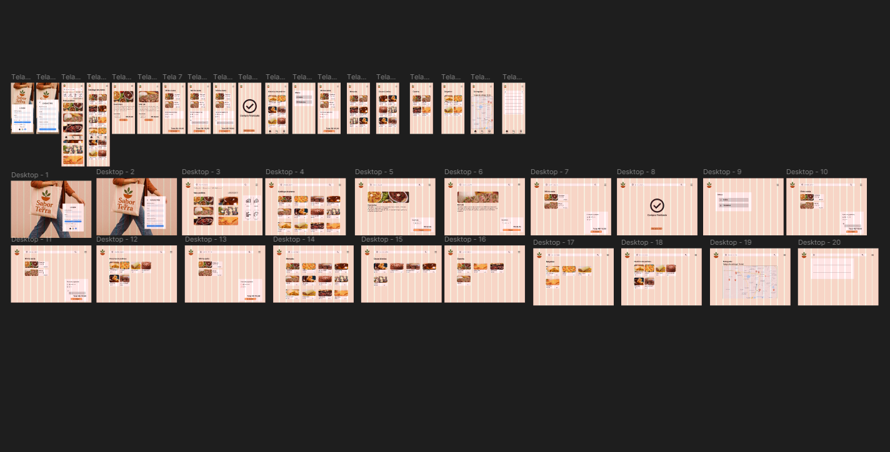
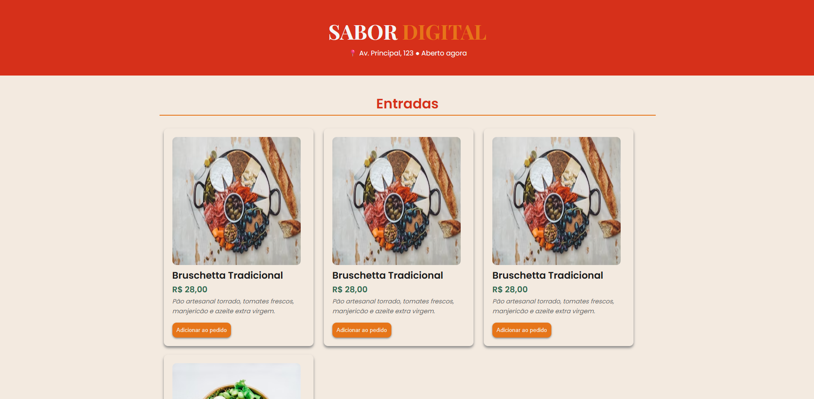

Tela de login
Tela de login com design simples e intuitivo, focada na facilidade de acesso do usuário. Possui campos essenciais e opção de recuperação de senha, garantindo praticidade.
Sou um estudante de tecnologia apaixonado por aprender e criar soluções práticas. Tenho interesse em criar projetos que impactam o dia a dia das pessoas. Estou sempre buscando evoluir minhas habilidades e transformar ideias em projetos reais.
Saber mais
Tela de login com design simples e intuitivo, focada na facilidade de acesso do usuário. Possui campos essenciais e opção de recuperação de senha, garantindo praticidade.

Interface inspirada em plataformas de streaming, com layout moderno e destaque para conteúdo em evidência. Utiliza CSS Flexbox para organização eficiente e responsiva dos elementos na tela.

Este projeto apresenta o design de uma interface completa para um sistema de delivery, com versões responsivas para desktop e dispositivos móveis.

Esta interface apresenta a seção de entradas de um cardápio digital para o restaurante 'Sabor Digital'. O design limpo e moderno, com foco na usabilidade.
Esta interface apresenta a seção de entradas de um cardápio digital para o restaurante 'Sabor Digital'. O design limpo e moderno, com foco na usabilidade.
Esta interface apresenta a seção de entradas de um cardápio digital para o restaurante 'Sabor Digital'. O design limpo e moderno, com foco na usabilidade.
Tinha muito interesse na área de tecnologia, porém não sabia por onde começar.
Dei o primeiro passo e comecei a estudar por conta própria; daí desenvolvi uma noção básica sobre o assunto e pude escolher um caminho para prosseguir.
Entrei em um curso de Desenvolvimento de Sistemas no Senac e comecei a me aprofundar no assunto, aprendendo muito mais do que eu imaginava.
Sigo até hoje estudando e aprendendo cada vez mais, e pretendo me tornar um bom profissional na área, tanto tecnicamente quanto mentalmente.